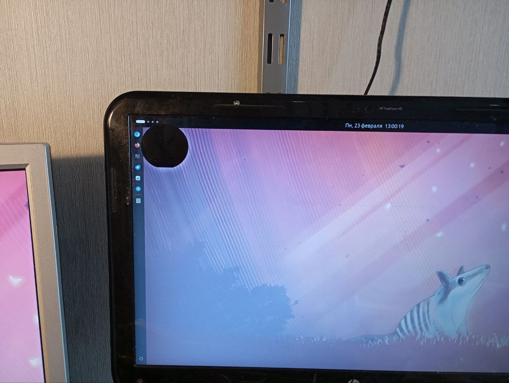
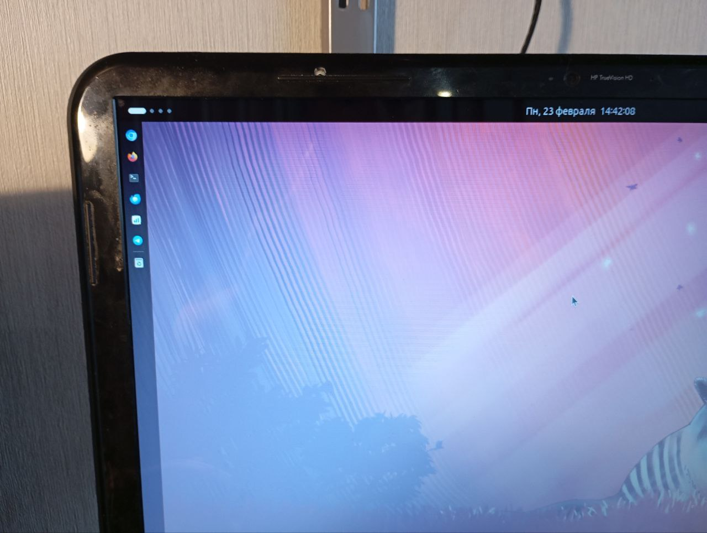

2026-02-23
14:49
Продление жизни старому ноутбуку. Зачем-то полез вскрывать тушку, хотя
можно было обойтись двумя винтами на экране.
Всего с десяток раз пересобирал обратно, чтобы ничего не забыть и нормально закрепить все раздолбанные шлейфы.
Будет жить ещё, но пластик уже сыпется.

14:49
